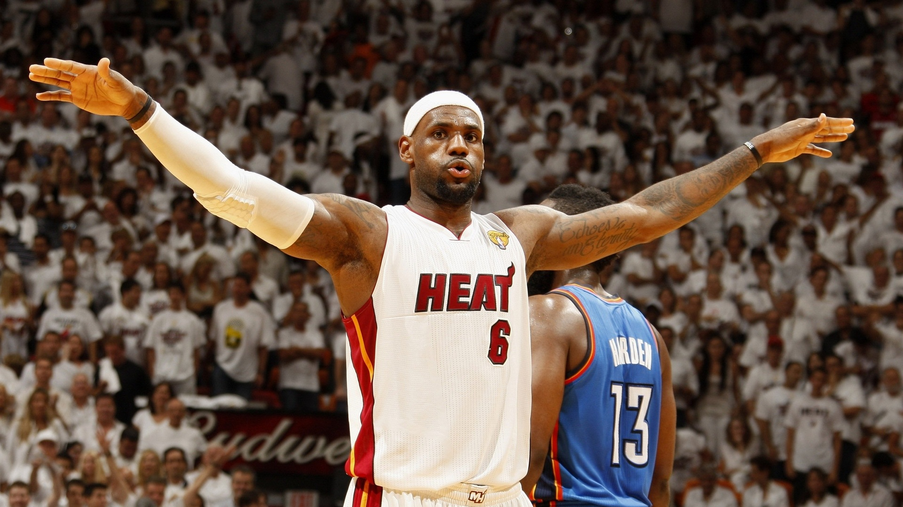
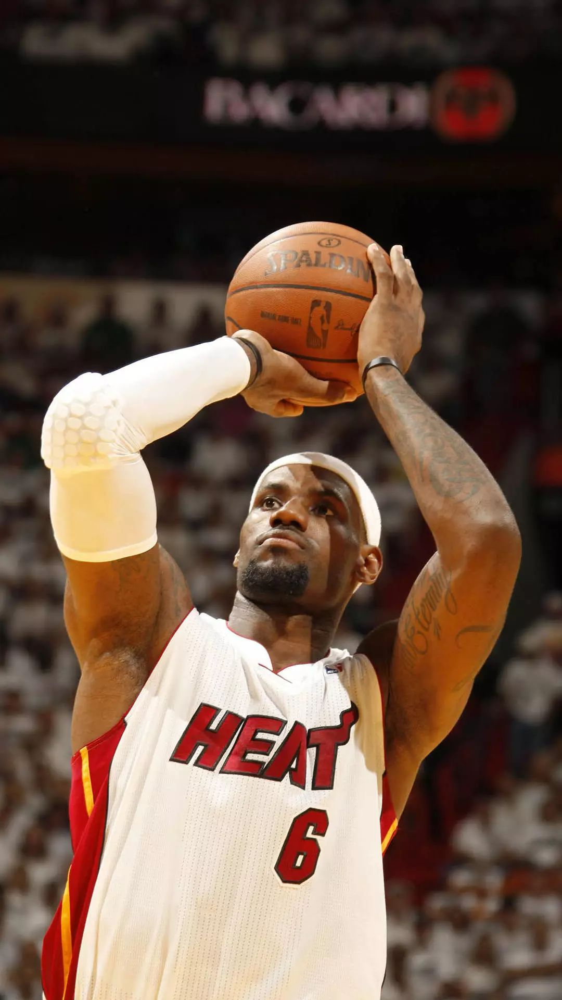

<!DOCTYPE html >
<html >
<head>
<meta http-equiv="Content-Type" content="text/html; charset=utf-8" />
<title>我的个人网页</title>
<link href="images/css.css" rel="stylesheet" type="text/css" />
<style type="text/css">

</style>
</head>
<body>
<audio src="tenyear.mp3" autoplay="autoplay">
</audio>
</body>
</html>
<body>
<table width="100%" border="0" cellpadding="0" cellspacing="0" class="nav">
  <tr>
    <td></td>
    <td width="100" align="center"><a href="index.html">个人介绍</a></td>
    <td width="100" align="center"><a href="haoyou.html">我的偶像</a></td>
    <td width="100" align="center"><a href="photo.html">生活写照</a></td>
    <td width="100" align="center"><a href="rizhi.html">激励自己的话</a></td>
    <td width="100" align="center"><a href="yinyue.html">我最喜欢的音乐</a></td>
  </tr>
</table>
<table width="800" border="0" align="center" cellpadding="0" cellspacing="0" class="main">
  <tr>
    <td></td>
  </tr>
  <tr>
    <td><table width="800" border="0" cellspacing="10" cellpadding="0">
      <tr>
        <td colspan="2"><div class="title">我的偶像 --勒布朗詹姆斯</div></td>
        </tr>
      <tr>
        <td><p >勒布朗·詹姆斯（LeBron James），全名勒布朗·雷蒙·詹姆斯（LeBron Raymone James），1984年12月30日出生于美国俄亥俄州阿克伦，美国职业篮球运动员，司职小前锋，效力于NBA洛杉矶湖人队</p>
          <p >勒布朗·詹姆斯在2003年NBA选秀中于首轮第1顺位被克利夫兰骑士队选中，在2009年与2010年蝉联NBA常规赛最有价值球员（MVP）。2010年，詹姆斯转会至迈阿密热火队。2012年，詹姆斯得到NBA个人生涯的第3个常规赛MVP，第1个总冠军以及总决赛MVP，并代表美国男篮夺得了伦敦奥运会金牌，追平了迈克尔·乔丹在1992年所创的纪录。2013年，詹姆斯夺得第4个常规赛MVP、第2个NBA总冠军和第2个总决赛MVP，实现两连冠。2014年，詹姆斯回归骑士队。2016年，詹姆斯带领骑士队逆转战胜卫冕冠军金州勇士队夺得队史首个总冠军和个人第3个总决赛MVP。2018年7月10日，詹姆斯正式与洛杉矶湖人队签下4年1.53亿美元的合同。2019-20赛季，詹姆斯当选NBA助攻王并带领湖人队夺得第17次总冠军，个人第4个总冠军以及个人第4个总决赛MVP。</p>
<p >勒布朗·詹姆斯篮球智商极高、突破犀利，拥有出色的视野和传球技术，被认为是NBA有史以来最为全能的球员之一。</p>
          <div><font color="red">喜欢詹姆斯的原因</font></div>
	<p >忠于爱情，和妻子萨瓦娜高中到现在糟糠之妻不下堂恩爱如斯，从无绯闻。</p>
	<p >重视友情，对待从小到大的小兄弟比如里奇-保罗，富贵勿相忘，赠送跑车，加入自己公司。当然和球员的友情就更不用说了（韦德、安东尼、保罗、博士、戴维斯、JR等等）</p>
	<p >重视情亲，老詹是个出名的孝子，对待一手拉扯大的妈妈又是送豪车又是送豪宅，吃穿住行全包，甚至连绯闻男友的花销也包了。</p>
	<p >社会责任感，除了捐款以外，老詹建立了一个慈善基金会，专门用来做慈善让很多的穷人上学，接受正规的篮球训练。</p>
	<p >情绪控制，老詹在球场上遭受的恶意犯规可以说不是针对谁，老詹嘴一瘪，想发怒又忍住了，最多向裁判抱怨下，如果惹得裁判一瞪眼老詹就给你来个机械舞，从来没有什么挥拳之类的暴力冲突。老詹说了，一不想让个人情绪伤害球队，二不想给喜欢自己的球迷树立不好的榜样。这才是真男人啊！打死不给哨，真是太辛苦了</p>
	<p >对篮球的态度，可能好多人曾经说唠嗑在肌腱断了的情况下还坚持罚了两个球，其实詹姆斯在10年季后赛对凯尔特人是在手肘撕裂的情况下打完了这个系列赛的。其实在球场上拼的腿抽筋，腿抽筋打过球的应该都知道，这不是意外伤，是真真实实的拼的体力透支，肌肉报警的信号才会抽筋。每年休赛期都早早地召集队友训练，到季后赛关闭社交网络（当然2020年除外，因为隔离需要和家人保持联系）。</p>
	<p >对待队友，各种鼓励，在热火时期因为哈斯勒姆要想留在热火必须得接受底薪，但是这样的话，哈斯勒姆就没有钱给妈妈治病，此时詹姆斯选择和韦德一块儿降薪。给队友时常赠送金腰带，IPAD，手表什么的。还有多次挽救JR的职业生涯。</p>
	<p >老詹的球技不用多说了，粗中有细，能暴力战斧，能超远三分，也能用他那大块头传出绣花针般的no look pass，还有历史上最多的绝杀球，各项数据也是历史第一！</p>
	<p >努力程度，从刚进联盟时期还略显瘦弱的青涩少年到热火时期为了打大前锋增重到现在的减重。体重是说增就增说减就减，这让那些说减肥的却怎么减都减不下去的胖子情何以堪。从跟奥拉朱旺学背打到跟雷阿伦学罚球，说实话光罚球姿势老詹就改不知道多少个了，这背后是难以想象的自律和努力。殊不知，凌晨四点+卡车轮胎的艰辛！</p>
	<p >对待球迷，一次比赛结束后詹姆斯没有急着去接受采访，而是去见了一个患了病的小球迷，先是把发带送了，然后把球衣也送了，最后球鞋也送了。这样的例子数不胜数 </p></td>
        <td><table width="100%" border="0" cellspacing="0" cellpadding="0">
          <tr>
            <td align="center"></td>
            </tr>
          <tr>
            <td align="center"></td>
            </tr>
        </table></td>
        </tr>
      <tr>
        <td>&nbsp;</td>
        <td align="center"></td>
        </tr>
    </table></td>
  </tr>
  <tr>
    <td>&nbsp;</td>
  </tr>
</table>
</body>
</html>
